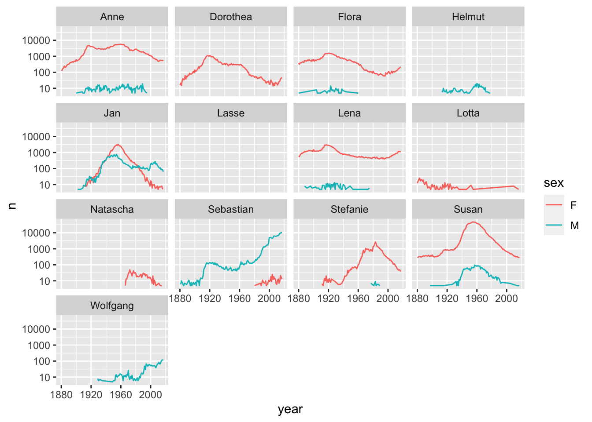

library('tidyverse')Baby names
R
library('babynames')
library('tidyverse')
str(babynames)tibble [1,924,665 × 5] (S3: tbl_df/tbl/data.frame)
$ year: num [1:1924665] 1880 1880 1880 1880 1880 1880 1880 1880 1880 1880 ...
$ sex : chr [1:1924665] "F" "F" "F" "F" ...
$ name: chr [1:1924665] "Mary" "Anna" "Emma" "Elizabeth" ...
$ n : int [1:1924665] 7065 2604 2003 1939 1746 1578 1472 1414 1320 1288 ...
$ prop: num [1:1924665] 0.0724 0.0267 0.0205 0.0199 0.0179 ...babynames |>
filter(name %in% c('Susan', 'Sebastian', 'Flora', 'Anne', 'Wolfgang', 'Jan',
'Dorothea', 'Lotta', 'Helmut', 'Lasse', 'Lena', 'Natascha',
'Stefanie', 'Barbel')) |>
ggplot(aes(year, n, colour = sex)) + geom_line() +
facet_wrap(vars(name)) +
scale_y_continuous(trans = 'log10')`geom_line()`: Each group consists of only one observation.
ℹ Do you need to adjust the group aesthetic?
babynames |>
filter(name == 'Sebastian', sex == 'M') |>
DT::datatable()